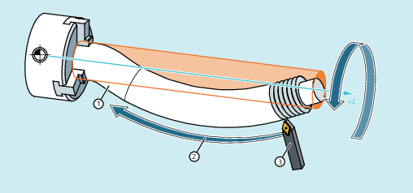

Mit den G-Befehlen G335 und G336 besteht die Möglichkeit, ballige (= von der zylindrischen Form abweichende) Gewinde zu drehen. Anwendung ist die Bearbeitung extrem großer Bauteile, die durch ihr Eigengewicht in der Maschine durchhängen. Achsparallele Gewinde würden dazu führen, dass der Gewindegang in der Mitte des Bauteils zu gering ist. Mit den balligen Gewinden kann dies ausgeglichen werden.
Drehen eines balligen Gewindes
Das Drehen balliger Gewinde wird mit G335 oder G336 programmiert:
| Drehen eines balligen Gewindes auf einer im Uhrzeigersinn verlaufenden kreisförmigen Werkzeugbahn |
| Drehen eines balligen Gewindes auf einer gegen den Uhrzeigersinn verlaufenden kreisförmigen Werkzeugbahn |
Die Programmierung erfolgt zunächst wie bei einem linearen Gewinde über die Angabe der axialen Satzendpunkte und der Steigung über die Parameter I, J, und K (siehe "Gewindeschneiden mit konstanter Steigung (G33, SF)").
Zusätzlich wird noch ein Kreisbogen mit angegeben. Dieser kann wie bei G2/G3 über die Mittelpunkt-, Radius-, Öffnungswinkel- oder Zwischenpunktangabe programmiert werden (siehe "Kreisinterpolation"). Bei Programmierung des balligen Gewindes mit Mittelpunktprogrammierung ist dabei Folgendes zu beachten: Da I, J, und K bei Gewindeschneiden für die Steigung benutzt werden, müssen die Kreisparameter bei Mittelpunktprogrammierung mit IR=..., JR=... und KR=... programmiert werden.
| Kartesische Koordinate für den Kreismittelpunkt in X-Richtung |
| Kartesische Koordinate für den Kreismittelpunkt in Y-Richtung |
| Kartesische Koordinate für den Kreismittelpunkt in Z-Richtung |
| Hinweis |
IR, JR und KR sind die Standardwerte der über Maschinendatum (MD10651 $MN_IPO_PARAM_THREAD_NAME_TAB) einstellbaren Namen der Interpolationsparameter für ballige Gewinde. Abweichungen von diesen Standardwerten sind den Angaben des Maschinenherstellers zu entnehmen! |
Optional kann noch ein Startpunktversatz SF mit angegeben werden (siehe "Gewindeschneiden mit konstanter Steigung (G33, SF)").
Die Syntax zur Programmierung eines balligen Gewindes hat also folgende allgemeine Form:
G335/G336 <Achszielpunktkoordinate(n)> <Steigung> <Kreisbogen> [<Startpunktversatz>]| Programmcode | Kommentar |
|---|---|
| N5 G0 G18 X50 Z50 | ; Anfangspunkt anfahren. |
| N10 G335 Z100 K=3.5 KR=25 IR=-20 SF=90 | ; Balliges Gewinde im Uhrzeigersinn drehen. |
Balliges Gewinde im Uhrzeigersinn mit End- und Mittelpunktprogrammierung
| Programmcode | Kommentar |
|---|---|
| N5 G0 G18 X50 Z50 | ; Anfangspunkt anfahren. |
| N10 G336 Z100 K=3.5 KR=25 IR=20 SF=90 | ; Balliges Gewinde gegen den Uhrzeigersinn drehen. |
Balliges Gewinde gegen den Uhrzeigersinn mit End- und Mittelpunktprogrammierung
| Programmcode | |
|---|---|
| N5 G0 G18 X50 Z50 | |
| N10 G335 Z100 K=3.5 CR=32 SF=90 |
Balliges Gewinde im Uhrzeigersinn mit Endpunkt- und Radiusprogrammierung
| Programmcode | |
|---|---|
| N5 G0 G18 X50 Z50 | |
| N10 G335 Z100 K=3.5 AR=102.75 SF=90 |
Balliges Gewinde im Uhrzeigersinn mit Endpunkt- und Öffnungswinkelprogrammierung
| Programmcode | |
|---|---|
| N5 G0 G18 X50 Z50 | |
| N10 G335 K=3.5 KR=25 IR=-20 AR=102.75 SF=90 |
Balliges Gewinde im Uhrzeigersinn mit Mittelpunkt- und Öffnungswinkelprogrammierung
| Programmcode | |
|---|---|
| N5 G0 G18 X50 Z50 | |
| N10 G335 Z100 K=3.5 I1=60 K1=64 |
Balliges Gewinde im Uhrzeigersinn mit End- und Zwischenpunktprogrammierung
Siehe auch:
Ballige Gewinde (G335, G336): Weitere Informationen